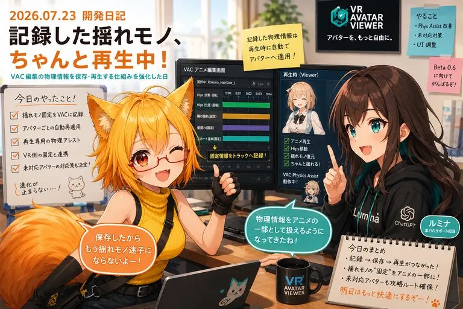

保存した揺れ、ちゃんと帰ってきてほしい日
今日のテーマは、アバターを保存して読み込み直したときに「見た目だけ似ている」ではなく、髪や服の揺れ方まで元の雰囲気へ近づけること。VAB 4.5の物理復元まわりを大きく前進させました。

「保存できた」と「同じように戻る」は別の話
VR Avatar Viewerでは、アバター本体や見た目の設定をひとまとめに保存する独自形式「VAB」を使っています。今日の作業では、その次世代仕様であるVAB 4.5で、髪やスカートなどの揺れ方をより正確に保存し、読み込み時に復元する仕組みを強化しました。
ろひ「保存した」
ルミナ「読み込みました」
ろひ「髪の揺れ方が違う」
ルミナ「ファイルは同じでも、物理の性格までは自動で戻ってこないんだよね……」
髪や服には、意外とたくさんの「性格」がある
VRChat系アバターでは、髪や服、アクセサリーの揺れを制御する仕組みとしてPhysBoneがよく使われます。簡単に言えば、「どれくらい柔らかいか」「重力にどれだけ引かれるか」「どこまで曲がってよいか」といった物理設定の集まりです。
今日の更新では、この情報をVAB 4.5向けに整理して保存し、Viewer側で読み戻すための専用処理が追加・拡張されています。単純に数値をコピーするだけでなく、元のアバターが持っていた構造と対応付けて復元する必要があります。
Particleも、マテリアルも、少しずつ「本人らしく」
午前1時台のコミットでは、見た目を作るマテリアル、光や煙などの演出に使うParticle、揺れモノの物理再現がまとめて改善されました。
Particleは、たとえばキラキラ、煙、光の粒などを大量の小さな要素として描く仕組みです。アバターによっては服やアクセサリーの一部として重要な演出なので、ここが消えると「本人なのに何か足りない」状態になります。
ろひ「見た目は本人」
ルミナ「でもキラキラがない」
ろひ「魂のエフェクトが抜けている」
ルミナ「復元対象に追加します」
そして現在もVAB 4.5は工事中
最新HEADのあとにも、VAB 4.5専用の物理データ形式とランタイム復元処理、変換ツール側の書き出し処理、テストコードが追加・更新されています。つまり今日の開発は、コミットしたところで終わりではなく、そのまま次の改善へ突入しています。
特に今回のような物理設定は、値がひとつ違うだけでも動きの印象が変わります。そのため「保存できた」だけでなく、「読み込んで元の動きへ近づいたか」を確認できるテストも重要です。
今日のまとめ
- VAB 4.5の物理復元仕様とViewer側の復元処理を更新
- マテリアル、Particle、揺れモノの再現精度を改善
- 髪や服の物理設定を保存するVAB 4.5専用データ形式を開発中
- 変換ツール側にも書き出し・検証処理を追加
- 読み込み後の再現性を確認するテストを強化
本日のひとこと
アバターの「見た目」を保存するだけでは足りない。揺れ方まで含めて、その子らしさだった。
今日の変更は内部処理が中心ですが、最終的に目指しているのはシンプルです。保存したアバターを開いたとき、「うん、いつものこの子だ」と感じられること。VAB 4.5は、そのための情報を少しずつ増やしています。